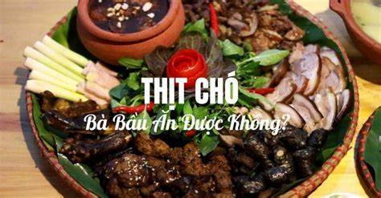

Phở Bò

Description
Best food you will ever experienced
You will never regret
Steps
- Preheat oven to 425 degrees F (220 degrees C).
- Place beef bones on a baking sheet and roast in the preheated oven until browned, about 1 hour.
- Place onion on a baking sheet and roast in the preheated oven until blackened and soft, about 45 minutes.
- Place bones, onion, ginger, salt, star anise, and fish sauce in a large stockpot and cover with 4 quarts of water. Bring to a boil and reduce heat to low. Simmer on low for 6 to 10 hours. Strain the broth into a saucepan and set aside.
- Place rice noodles in large bowl filled with room temperature water and allow to soak for 1 hour. Bring a large pot of water to a boil and after the noodles have soaked, place them in the boiling water for 1 minute. Bring stock to a simmer.
- Divide noodles among 4 serving bowls; top with sirloin, cilantro, and green onion. Pour hot broth over the top. Stir and let sit until the beef is partially cooked and no longer pink, 1 to 2 minutes. Serve with bean sprouts, Thai basil, lime wedges, hoisin sauce, and chile-garlic sauce on the side.
Ingredients
- 4 pounds beef soup bones
- 1 onion, unpeeled and cut in half
- 5 slices fresh ginger
- 1 tablespoon salt
- 2 pods star anise
- 2 ½ tablespoons fish sauce
- 4 quarts water
- 1 (8 ounce) package dried rice noodles
- 1 ½ pounds beef top sirloin, thinly sliced
- ½ cup chopped cilantro
- 1 tablespoon chopped green onion
- 1 ½ cups bean sprouts
- 1 bunch Thai basil
- 1 lime, cut into 4 wedges
U Tu Be Link:
Phở Bò
Next Episode:
